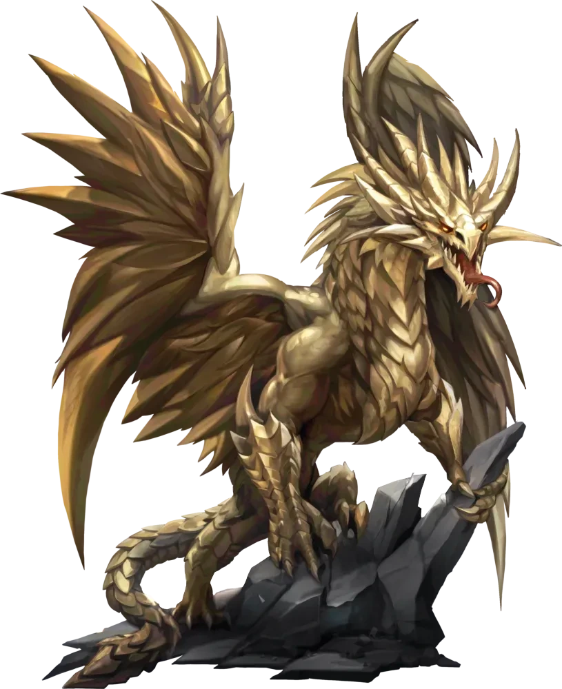

各年龄段数据卡
即便成长为威能无匹的太古龙，黄铜龙通常也依然对凡人及其功业造物怀有近乎孩童般的好奇心。它们依旧会把喜怒哀乐毫不掩饰地表现在鳞片色泽上。不过，较年轻的黄铜龙多以异想天开、无忧无虑著称；而太古黄铜龙由于深深投入凡俗事务之中，在数千年间亲历了无数生老病死的更迭轮回，因此比其他任何太古龙都更容易陷入深沉的抑郁与其他消极心理定式之中。 正因为黄铜龙对凡人社会及其间的芸芸众生了如指掌，它们对这些凡人的生命倾注了非比寻常的情感，因而也会为他们的逝去而格外伤怀。出于这一缘故，太古黄铜龙往往会饲养长寿的奇花异草或珍奇生灵作为宠物；它们借照料宠物的契机转移注意力，让自己摆脱阴郁低落的思绪，同时也为自己寻得一位长久相伴的伙伴。 其他巨龙有时会轻蔑地宣称，太古黄铜龙只是在寻找一种更长久的宠物，好填补那些转瞬即逝的凡人“宠物”离世后留下的空缺；但在黄铜龙自己看来，这两者根本不能相提并论。不过，它们对这些长寿宠物倾注了极深的情感这一点确是毋庸置疑的，因此它们也会不惜一切地守护自己的爱宠。倘若有哪个不长眼的敌人胆敢动它们心爱的万古幼猫一根毫毛，便有可能激怒一条太古黄铜龙，引来一场势不可挡的死亡与毁灭狂潮。 尽管其中的凶险显而易见，仍有一些走投无路或愚蠢透顶的阴谋家动过歪脑筋，妄图绑架其宠物充当人质，借此挟制太古黄铜龙的行动。起初这一手或许确实能够奏效――巨龙为了不让爱宠陷入险境，往往会先答应绑匪的初步要求――但这些绑架者实实在在是在玩火自焚，如此胆大包天的行径最终几乎注定会遭到惨烈的反噬。 这些短命的勒索者，连同其他形形色色的恶棍与敌手，往往严重低估了一条典型太古黄铜龙的人脉究竟有多么深广。无论一场阴谋掩藏得多么严密，太古黄铜龙庞大的情报网也必定早有眼线或触角埋设在相隔不过几层关系的知情人身边。太古黄铜龙只需抓住一丝线索或一个微小的破绽，便能瞬间激活整张情报网络，分毫不差地揪出所需的一切消息。大多数黄铜龙哪怕贵为太古龙也依旧摆出的那副天真无邪的姿态，不过是一层伪装罢了；一旦反击的时刻到来，它们便会毫不犹豫地褪去这层假面。 爱管闲事的邻居黄铜龙堪称登峰造极的“包打听邻居”――它们对住在附近的每一个人闲聊、八卦、窥探、打听，甚至明目张胆地暗中监视，不仅亲自上阵满足旺盛的好奇心，还会动用消息灵通的情报网、预言法术，乃至无辜小动物们的叽喳闲谈来互为补充。所幸黄铜龙通常并非横加干涉或幕后操纵之辈，不会刻意去左右或摆布他人的生活与计划。但只要周遭有什么风吹草动，你大可以打赌当地的黄铜龙早就一清二楚――无论是北境凶险暴君大举入侵的军情，还是镇上面包师家里的夫妻矛盾，没有任何秘密能瞒过一条黄铜龙的耳目！ |
 太古黄铜龙 |